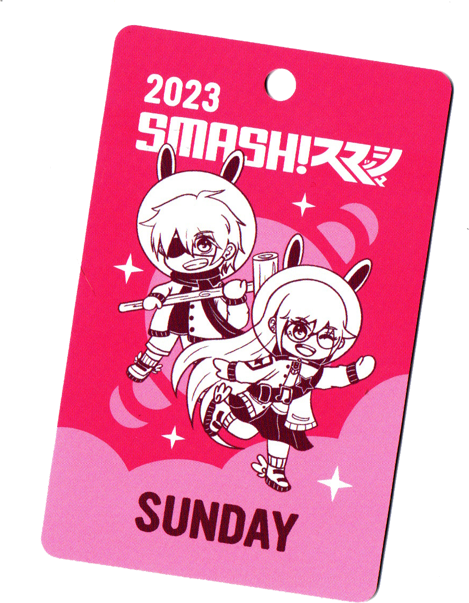
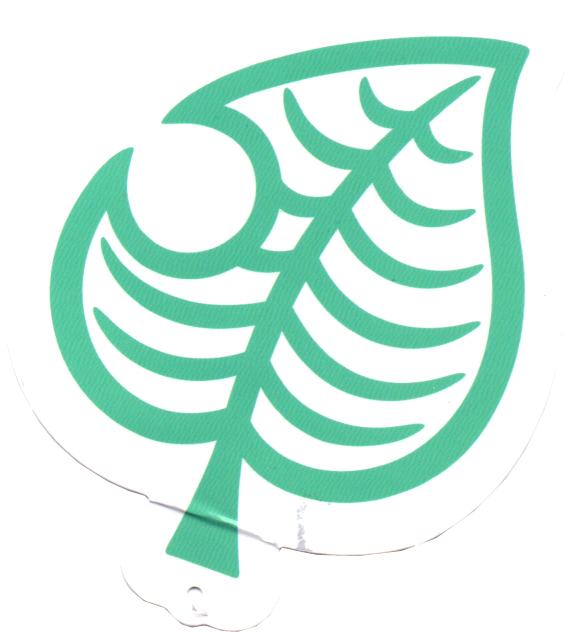

the august 2023 amiami flyer!!! i like this one a lot...
the august 2023 amiami flyer!!! i like this one a lot... a print that came with my time witch jsk!!! it's so cute ;__; care instructions are on the back!
a print that came with my time witch jsk!!! it's so cute ;__; care instructions are on the back!entry pass for a con i went to! i went on both days but i can't find my sat pass... hmmm...
 the paper piece from a box set of plushies i got for my friend and i...
the paper piece from a box set of plushies i got for my friend and i...snoopy tag from a jumper i was gifted c: it got bent...
tag from an acnh goody box i got for a birthday!
 little note paper from a package from a friend ... i like how silly the bunny looks
little note paper from a package from a friend ... i like how silly the bunny looks the little instruction note from a capsule toy dispenser capsule toy......... i thought it was so nifty i adore it so much. things are 10x better when theyre miniature
the little instruction note from a capsule toy dispenser capsule toy......... i thought it was so nifty i adore it so much. things are 10x better when theyre miniature note paper from a friend! loaf dog? amazing...
note paper from a friend! loaf dog? amazing... the packaging of some hello kitty sticker flakes... it came from the same set as the tag!
the packaging of some hello kitty sticker flakes... it came from the same set as the tag! the tag on a hello kitty stationary set i got for my birthday! i'm not a huge hello kitty person but i love red and this was just too cute to pass up ... it had some lovely washi tape and sticky notes too!!
the tag on a hello kitty stationary set i got for my birthday! i'm not a huge hello kitty person but i love red and this was just too cute to pass up ... it had some lovely washi tape and sticky notes too!! the tag from my BELOVED jyushi nui ... i love him so much :] i actually accidentally bent this tag bc the fan blew it off the table and it got stuck in a sliding door... but it didnt really show up on the scan so i'm happy!
the tag from my BELOVED jyushi nui ... i love him so much :] i actually accidentally bent this tag bc the fan blew it off the table and it got stuck in a sliding door... but it didnt really show up on the scan so i'm happy! the backing from the cutest little halloween marroncream figure!!! i knew i had to get her as soon as i saw her... she is everything to me...
the backing from the cutest little halloween marroncream figure!!! i knew i had to get her as soon as i saw her... she is everything to me... the tag from a lovely little marroncream plush that was gifted to me by a friend!! shes so cute and her dress is actually separate from her body which was so exciting to me because the other plushes i have of her are just a ball and some legs sewn on which i still find so charming but it was an OMG!!! moment for me LOL
the tag from a lovely little marroncream plush that was gifted to me by a friend!! shes so cute and her dress is actually separate from her body which was so exciting to me because the other plushes i have of her are just a ball and some legs sewn on which i still find so charming but it was an OMG!!! moment for me LOL a flyer i got at a convention i went to when i was younger!!! i've kept it all this time because i was just so excited to see miku on something lol ... it was my first time seeing anything vocaloid in the wild...
a flyer i got at a convention i went to when i was younger!!! i've kept it all this time because i was just so excited to see miku on something lol ... it was my first time seeing anything vocaloid in the wild... a little packet that my friend sent me with some stationary in it!!! i was excited that her bow was grey, because the other time they sent me one her bow was teal and i thought it was cute to have matching ones... also the crop on these is awful i need to fix that someday
a little packet that my friend sent me with some stationary in it!!! i was excited that her bow was grey, because the other time they sent me one her bow was teal and i thought it was cute to have matching ones... also the crop on these is awful i need to fix that someday matches with the grey bow mymelo!! this teal one was the first packet they sent me and it had some candy in it! i used to have it up on a little magnet board in my room but my cat kept pulling it down :(
matches with the grey bow mymelo!! this teal one was the first packet they sent me and it had some candy in it! i used to have it up on a little magnet board in my room but my cat kept pulling it down :( the packet of the sanrio amiibos which my friend bought for my birthday!!! i'd heard so many stories about them selling out everywhere so i was so shocked that she found some... apparently there were plenty in stock? so i guess it wasnt as popular in australia ... win for us i guess!
the packet of the sanrio amiibos which my friend bought for my birthday!!! i'd heard so many stories about them selling out everywhere so i was so shocked that she found some... apparently there were plenty in stock? so i guess it wasnt as popular in australia ... win for us i guess! cute little sumikko gurashi note. nuff said
cute little sumikko gurashi note. nuff said the note that came with the stationary my friend send me!! if i call correctly this was in the mymelo packet with the grey note...
the note that came with the stationary my friend send me!! if i call correctly this was in the mymelo packet with the grey note...